第六讲：AI 辅助数据采集
课程讲义 · 网页教材
课程： 人工智能在经济管理研究中的应用
授课人： 张晨（西北农林科技大学经济管理学院）
讲次： 第 6 次课（2 课时）
日期： 2026 年夏季学期
本次教学目标
学完本次课后，你将能够：
- 理解爬虫的基本原理和技术选型逻辑
- 让 Agent 帮你发现网页背后的隐藏 API
- 识别并应对常见的反爬策略
- 设计生产级爬虫的多线程调度架构
- 用 TODO.md 文件驱动 Agent 完成复杂爬虫开发
- 掌握爬虫工程实践的基本原则
上节：爬虫原理与 API 发现
1. 什么是爬虫？
爬虫的本质是：模拟浏览器行为，向服务器发送请求，获取响应后解析出你需要的数据。 它用代码自动化了”打开网页 → 复制信息 → 关闭网页”这个你每天都在做的动作。
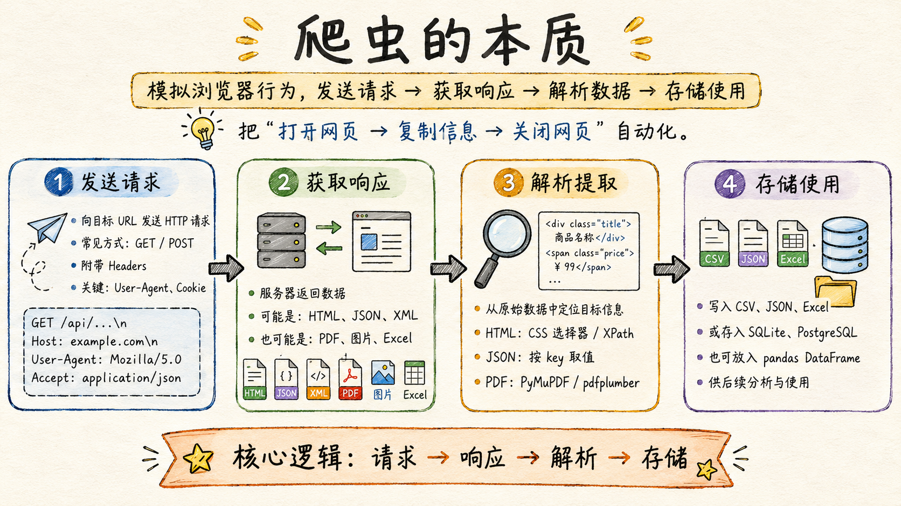
上图展示了爬虫的四个核心环节。让我们逐一展开。
第一步：发送请求。 你向目标 URL 发送一个 HTTP 请求。请求可以是 GET（“把这个页面给我”）或 POST（“用这些参数帮我查询”）。请求需要附带请求头（Headers）——告诉服务器你是谁、从哪来、要什么格式的数据。最关键的请求头是 User-Agent（标识浏览器类型）和 Cookie（维持登录状态）。
GET /api/v3/cable/2africa.json HTTP/1.1
Host: www.submarinecablemap.com
User-Agent: Mozilla/5.0 ...
Accept: application/json第二步：获取响应。 服务器收到请求后返回数据。可能是一个 HTML 页面（你右键”查看网页源代码”看到的东西）、一个 JSON 字符串（API 的标准返回格式）、一个 XML 文档、或者一个二进制文件（PDF、图片、Excel）。
第三步：解析提取。 从返回的原始数据中定位并抽取你需要的信息。对于 HTML——用 CSS 选择器或 XPath 定位元素；对于 JSON——用 Python 的 json 库解析成字典后按 key 取值；对于 PDF——用 PyMuPDF 或 pdfplumber 提取文本。
第四步：存储使用。 将提取的数据写入文件（CSV、JSON、Excel）、数据库（SQLite、PostgreSQL）或数据框（pandas DataFrame），供后续分析使用。
爬虫涉及的技术栈并不复杂，核心是五块知识：
| 技术 | 在爬虫中的作用 | 你需要学到什么程度 |
|---|---|---|
| HTTP 协议 | 理解请求方法（GET/POST）、状态码（200/403/404）、Headers、Cookies | 能看懂浏览器 Network 标签页里的请求信息 |
| HTML 语言 | 解析网页结构，定位目标元素 | 会用 CSS 选择器和 XPath |
| JavaScript 基础 | 处理动态加载、加密参数、前端逻辑 | 能大致看懂 Network 里的 JS 文件名，推断哪个可能是数据请求 |
| 正则表达式 | 从文本中快速抽取特定模式（日期、数字、URL） | 会写\d+ 和 [a-zA-Z]+ 级别的模式 |
| 数据库技术 | 持久化存储、去重、索引与查询 | 会用 SQLite——建表、INSERT、SELECT |
好消息是：在 Agent 时代，你不需要精通每一样。Agent 知道怎么写 CSS 选择器、怎么构造请求头、怎么设计数据库表结构。你需要的是理解这些技术各自解决什么问题，然后用清晰的指令让 Agent 去执行。
2. 两种技术路线
爬虫开发面临的第一个关键决策：用直接 HTTP 请求还是模拟浏览器？
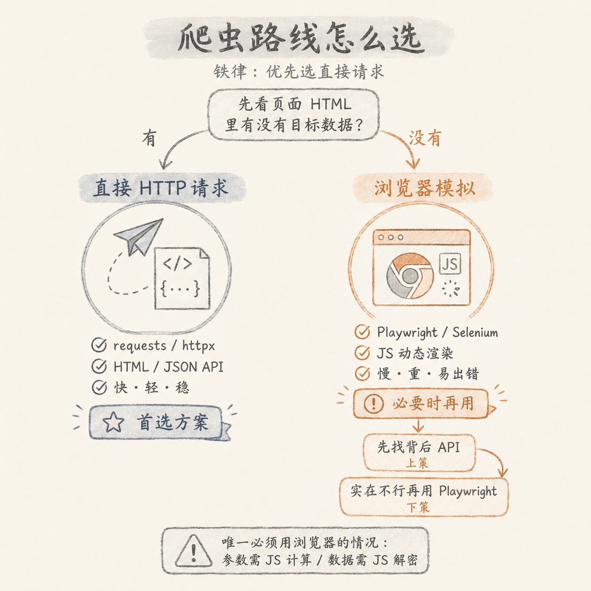
| 路线 | 代表工具 | 原理 | 适用场景 | 速度 |
|---|---|---|---|---|
| 直接 HTTP 请求 | Pythonrequests / httpx |
发送 HTTP 请求，直接获取服务器返回的原始数据 | 数据在 HTML 或 JSON API 中 | 快 |
| 浏览器模拟 | Playwright / Selenium | 启动真实的 Chromium 浏览器，执行 JS，渲染页面 | 数据由 JavaScript 动态生成 | 慢 |
铁律：优先选直接请求。永远如此。
为什么？一个直接请求消耗的资源是：发送一个 TCP 包、接收一个 HTTP 响应、解析文本。一个 Playwright 请求消耗的资源是：启动 Chromium 进程（200MB+ 内存）、加载完整网页（包括所有图片、CSS、JS）、执行页面脚本、渲染 DOM 树、然后你从渲染结果中提取数据。两者的开销差距是几个数量级。
更重要的是可靠性。requests 是纯 Python——没有外部依赖、没有进程管理、没有超时竞态。Playwright 依赖一个外部浏览器进程——浏览器可能崩溃、页面可能加载超时、JS 可能执行失败、选择器可能因为页面改版而失效。
那什么时候必须用浏览器模拟？
看一个简单的测试。用 webfetch 工具访问目标页面——如果返回的 HTML 里没有你期望的内容（比如一个空的 <div id="root"></div>），说明这个页面是 SPA（单页应用），数据由 JavaScript 动态注入。这时你有两个选择：
- 上策： 用浏览器开发者工具找到数据背后的 API（见下一节），然后用 requests 直接调用
- 下策： 用 Playwright 渲染页面，从渲染后的 DOM 中提取数据
什么时候下策变成唯一选择？当 API 需要复杂的 JS 计算来生成请求参数时（如加密签名），或者 API 返回的是加密数据需要 JS 解密时。但在学术研究的数据采集中，这类情况相对少见——大多数公开数据源的 API 是设计给前端用的，参数是明文传递的。
3. 让 Agent 发现隐藏 API
现代网站大量使用 SPA（Single Page Application）架构——你看到的页面是 JavaScript 在浏览器里渲染的，查看网页源代码时什么都找不到。这时需要「API 发现」——找到页面背后的数据接口。
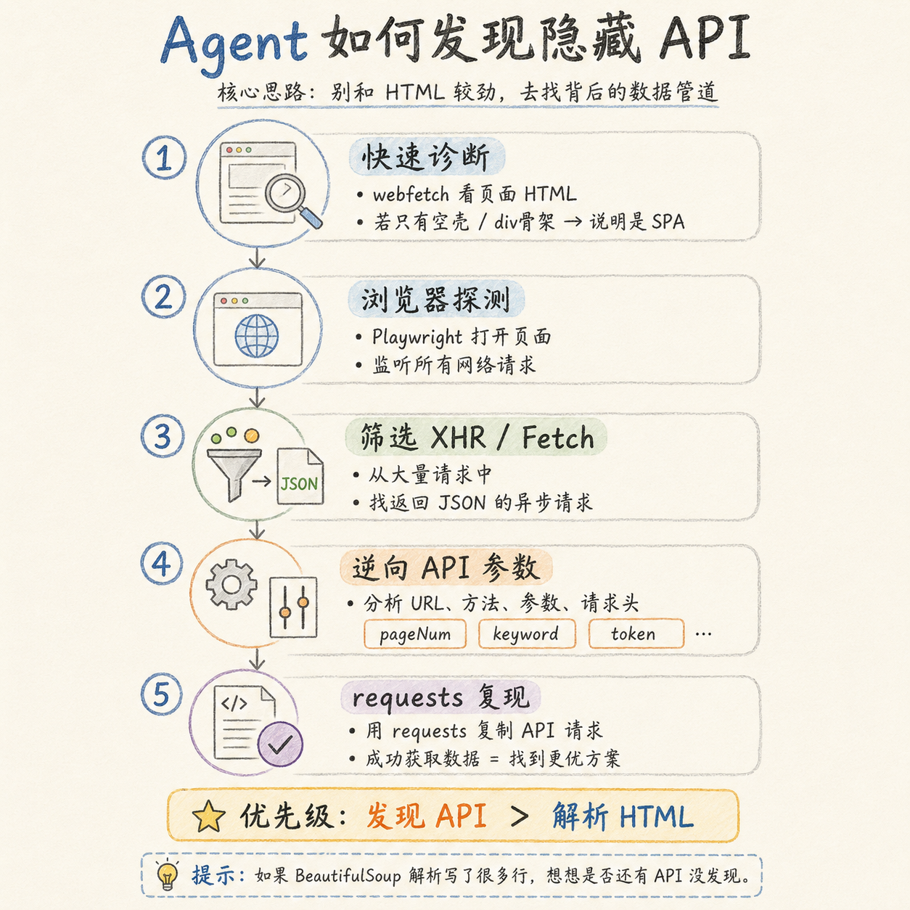
Agent 的 API 发现策略，本质上就是把你手动做的事自动化——用 Playwright 打开页面、监听网络请求、筛选出 XHR/Fetch 类型的请求、检查哪些返回了结构化数据。
具体步骤如下：
第一步：快速诊断。 让 Agent 用 webfetch 访问目标页面。如果返回内容为空或只有 <div id="app"></div> 这样的加载骨架，说明页面是 SPA，数据通过 API 获取。
第二步：浏览器探测。 让 Agent 用 Playwright 打开目标页面，同时启用网络请求监听。Playwright 可以记录页面加载过程中发出的所有 HTTP 请求——包括 HTML 文档、CSS 样式、JS 脚本、图片和异步数据请求。
第三步：筛选 XHR / Fetch 请求。 在记录的几百个请求中，Agent 需要筛选出异步数据请求（XHR 或 Fetch 类型），逐个检查它们的响应内容。重点关注返回 JSON 格式数据的请求——这些就是 API。
第四步：逆向 API 参数。 找到 API 端点后，分析它的请求参数。分页参数（pageNum, pageSize）决定了你能拉多少条数据；查询参数（keyword, category, startDate, endDate）决定了你能筛选什么内容；鉴权参数（token, cookie）决定了你的请求能被接受多久。
第五步：用 requests 复现。 把 Playwright 中观察到的 API 请求（URL、方法、参数、请求头）用 requests 复制出来。如果能成功获取数据——恭喜，你找到了比模拟浏览器更优雅的方案。
这个流程的核心思想是：不要和页面的 HTML 较劲——去找它背后的数据管道。 现代 Web 开发的基本模式是”前后端分离”：前端只负责渲染 UI 和交互，数据通过 API 从后端获取。如果你找到了这个 API，就等于跳过了前端的所有复杂性——CSS 布局、JS 渲染、DOM 操作——直接拿到了结构化的原始数据。
一个衡量标准： 如果你的爬虫代码里有超过 10 行 BeautifulSoup 解析逻辑，停下来想一想——是不是有一个 API 还没被发现？
4. 反爬策略全景
服务器不是为你准备的——它为主流浏览器的人类用户服务。当你用代码自动请求时，服务器会从多个维度察觉异常并阻止你。理解反爬策略是爬虫开发的基本功。
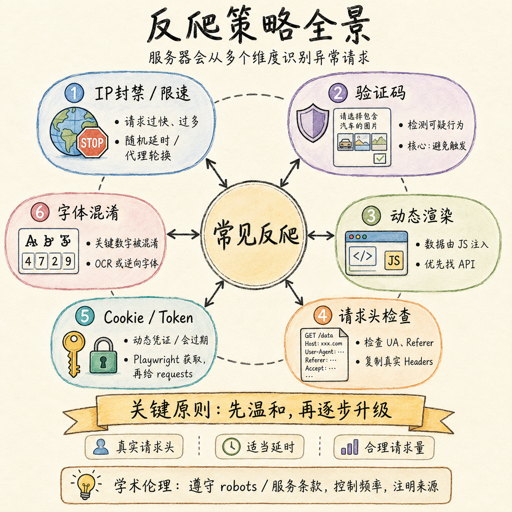
（1）IP 封禁 / 限速： 服务器统计每个 IP 的请求频率。同一 IP 在短时间内发起大量请求——请求间隔均匀（不像人类浏览有快有慢）、总请求量远超正常用户——触发封禁。应对方法分三层：第一层，随机化请求间隔（1-5 秒的均匀分布，而非固定 2 秒）；第二层，使用代理 IP 池轮换出口地址；第三层（学术场景通常不需要），使用住宅代理（ADSL 拨号）让每个请求看起来来自不同的普通家庭用户。
（2）验证码（CAPTCHA）： 服务器检测到可疑行为模式后，在响应中插入验证码挑战。传统的文本验证码可以用 OCR 识别，现代的 reCAPTCHA v3 在你无感知的情况下打分——分数太低则拒绝请求。应对的核心理念是「避免触发」而非「破解验证码」——降低请求频率、随机化行为模式、使用真实的浏览器指纹。如果已经触发了，多模态 AI（能看懂图片的 LLM）可以辅助识别，但这意味着你的请求策略需要调整。
（3）动态渲染： 数据不在服务器返回的 HTML 里，而是在浏览器执行 JavaScript 后才插入 DOM。这是最常见的 SPA 反爬——不是故意反爬，而是网站架构的副产品。应对方法已在上一节详述：找 API，而非渲染页面。
（4）请求头检查： 服务器检查你的请求头是否像一个真实浏览器。缺失的 User-Agent（“python-requests/2.31.0” 显然不是 Chrome）、缺少 Referer（正常浏览器访问时总会带上当前页面 URL）、缺少 Accept-Language 等标准头——这些都是自动化请求的特征。应对方法很简单：打开浏览器的开发者工具，复制一个真实请求的完整请求头，用在你的 requests 中。
（5）Cookie / Token 加密： 有些网站的 API 需要携带一个动态生成的 Token，这个 Token 是由客户端 JS 经过复杂计算生成的——可能是时间戳 + 随机数 + MD5，也可能是对请求参数的签名。单纯复制请求头不够，你需要理解 Token 的生成逻辑。应对策略：先用 Playwright 打开页面，获取浏览器自然生成的 Token 和 Cookie，然后将这些凭证传递给 requests 使用。Token 通常会在一段时间后过期，所以你需要定期刷新。
（6）字体混淆： 服务器返回的 HTML 中，关键数字（如价格、评分）使用的是自定义字体编码——你在 HTML 里看到的是类似  的乱码，但在浏览器中呈现为正常数字。这是因为网页加载了一个自定义字体文件，将特定的 Unicode 码点映射到了数字字形。应对方法有两种：OCR 识别页面截图（慢但通用），或者下载字体文件逆向其映射表（快但需要针对每个网站定制）。
关键原则：反爬是一个博弈过程，不要试图一次解决所有问题。 先用最温和的策略——真实请求头 + 适当延时（2-5 秒）+ 合理的请求量（不要试图在 1 小时内爬完 10 年的数据）。跑通流程后再逐步优化。如果你一上来就全副武装（代理池 + 分布式 + 验证码破解），不仅工程复杂度指数级增长，而且可能违反了目标网站的服务条款。
关于学术伦理： 确认数据采集目的符合目标网站的服务条款。许多网站在 robots.txt 中声明了爬虫访问规则。作为学术研究者，合理控制请求频率、不做商业化用途、注明数据来源，是最起码的学术规范。
5. 案例：海底光缆数据爬取
理论讲完了。现在让我们通过一个完整的入门级案例，看 Agent 如何从零开始完成数据采集。
目标： submarinecablemap.com——一个展示全球海底光缆的交互式地图。页面是一个 SPA，光缆数据通过 JavaScript 动态渲染在地图上。
用户给 Agent 的原始提示词：
请写一个 Python 脚本爬取 submarinecablemap.com 的海底光缆数据。注意：
- 所有数据保存为 CSV 格式，附带变量说明
- 使用代理
192.168.5.9:7890- 每次获取一条光缆数据后，停十几秒再请求，防反爬
- 必须包含开通时间、经过的国家和城市等信息
注意这个提示词的品质——目标 URL、输出格式、代理配置、延迟要求、必含字段，五个要素齐全。这不是”许愿式”的需求，而是结构化的任务描述。
Agent 的探索过程：
- Agent 先用
webfetch直接抓取页面 → 返回空白内容。确诊：SPA。 - Agent 改用 Playwright 打开页面，开启网络请求监听。
- 在 Network 标签页的数百个请求中，Agent 筛选出了几个关键的 JSON 请求：
/api/v3/config.json——网站配置/api/v3/search.json——所有光缆和登陆点的索引列表/api/v3/cable/cable-geo.json——光缆的地理坐标数据/api/v3/landing-point/landing-point-geo.json——登陆点的地理坐标数据
- Agent 进一步尝试
/api/v3/cable/{cable_id}.json，发现这是单条光缆的详情接口。 - 单条光缆返回的字段：
id（唯一标识）、name（名称）、length（长度，如 “45,000 km”）、landing_points（登陆点数组，每个包含名称、国家、城市）、owners（所有者）、suppliers（供应商）、rfs（开通年份）、is_planned（是否在建）、url（官方网站）、notes（备注）。
Agent 于是设计了两步策略：① 调用 /api/v3/search.json 获取所有光缆 ID 的列表；② 遍历每个 ID，调用 /api/v3/cable/{id}.json 获取详情。
反爬处理： 用户已指定了代理地址和 10-15 秒的随机延迟。Agent 在代码中实现了：
- 全局代理配置（
proxies={"http": "...", "https": "..."}） time.sleep(random.uniform(10, 15))的随机间隔- 30 秒请求超时（
timeout=30） - 重试逻辑（连接失败不中断，记录失败 ID 继续）
最终成果：
| 指标 | 数值 |
|---|---|
| 目标光缆总数 | 693 条 |
| 成功爬取 | 692 条（1 条因网络中断失败） |
| CSV 总行数 | 3150 行 |
| 涉及国家数 | 186 个 |
| 有 RFS（开通时间）数据的行数 | 3121 / 3150 |
| 运行时长 | 约 2-3 小时 |
输出文件：
submarine_cables.csv——展开后的表格数据，每行一个”光缆-登陆点”组合submarine_cables_raw.json——每条光缆的完整原始 JSON 响应variables_description.txt——字段说明文档
CSV 字段示例： cable_id, cable_name, length_km, rfs, rfs_year, is_planned, owners, suppliers, landing_points_count, landing_point_id, city, country, is_tbd, url, notes
关键经验：
- 明确任务描述能显著提升 Agent 生成的代码可用性。 用户列出了五个具体要求——目标 URL、输出格式、代理配置、延迟策略、必含字段。Agent 不需要猜测任何需求，直接设计实现方案。
- 让 Agent 先探索，再编码。 Agent 不是上来就写循环——它先用 Playwright 探测网站结构，发现 API 端点，验证数据格式，然后才设计爬取策略。
- 原始数据永不删除。
submarine_cables_raw.json保存了每条光缆的完整原始响应。如果后续发现 CSV 展开逻辑有误（比如某个登陆点被跳过），可以从原始 JSON 重新生成，不需要重新爬取。 - 数据展开设计要考虑分析需求。 CSV 采用的是”光缆-登陆点”展开——每条光缆如果有 10 个登陆点，就占 10 行。这样可以用 pandas 的
groupby('country')直接统计每个国家的光缆数量。
完整案例材料：
SubmarineCable/——包含爬虫脚本scrape_submarine_cables.py、原始数据submarine_cables_raw.json、最终数据submarine_cables.csv。
下节：生产级爬虫设计与实战
6. 案例：巨潮网公告爬虫
海底光缆案例的复杂度属于”入门级”——API 是公开的 GET 请求，不需要处理分页翻页，不需要持久化状态管理，整个爬取过程是一次性的。现在我们来看一个真正”生产级”的爬虫设计：巨潮网上市公司公告实时爬虫。
为什么叫”生产级”？ 因为它不是一次性的数据采集——它需要持续运行、增量更新、处理失败重试、追踪每条记录的状态。就像工厂的生产线一样，需要可靠地持续产出。
背景： 巨潮网（cninfo.com.cn）是中国上市公司公告的官方披露平台。每家公司每天可能发布多条公告——年报、季报、减持公告、重大资产重组、董事会决议、股东大会通知。对经管研究者来说，公告文本是重要的非结构化数据源——你可以从中提取减持事件、测量信息披露质量、分析管理层语调。
API 发现： Agent 的探索过程揭示了以下信息：
- 列表页是 SPA，真实数据来自一个 POST API
- POST 请求发送到
https://www.cninfo.com.cn/new/hisAnnouncement/query - 请求参数：
pageNum（页码）、pageSize（每页条数）、stock（股票代码）、searchkey（关键词）、category（公告分类）、seDate（日期范围） - 请求头必须包含
X-Requested-With: XMLHttpRequest和正确的Referer - 翻页通过递增
pageNum实现，每页最多返回 30 条
最关键的发现：列表 API 的返回中直接包含了 PDF 下载链接（adjunctUrl 字段）。 这意味着你不需要：
- 进入每条公告的详情页（省掉一层 HTTP 请求）
- 在详情页中寻找 PDF 链接（省掉一层 HTML 解析）
- 处理详情页可能的验证码或反爬
PDF 完整 URL 的拼接规则：https://static.cninfo.com.cn/{adjunctUrl}。Agent 验证了这个规则对不同类型的公告都有效。
7. 多线程调度架构
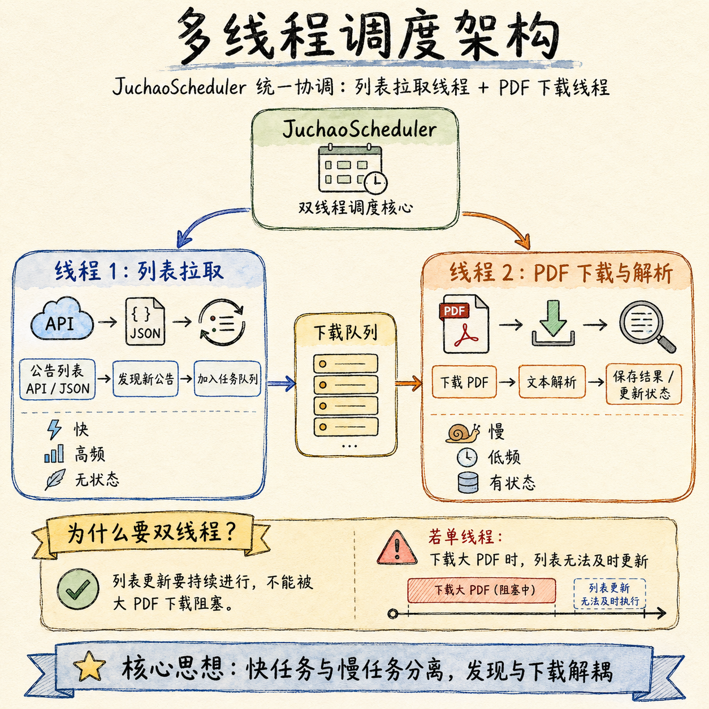
这个爬虫的核心架构是一个双线程分离的调度系统，由 JuchaoScheduler 类统一协调。
为什么需要双线程？因为列表拉取和 PDF 下载是两种完全不同的任务：
- 列表拉取： 快速（几 KB 的 JSON）、高频（有新公告就要发现）、无状态（每次拉取独立）
- PDF 下载： 慢速（几 MB 的 PDF 文件 + 文本解析）、低频（只有新公告需要下载）、有状态（需要追踪下载和解析是否成功）
如果放在同一个线程里，下载一个大 PDF 的时候列表就不能更新了——你会错过这期间发布的新公告。
线程一：列表更新线程（60 秒周期）
while running:
1. 设置日期范围（初运行拉取过去 N 天，后续拉取过去 1 小时）
2. 逐页请求列表 API（pageNum 从 1 开始递增，直到返回空结果）
3. 对每条公告记录提取 announcement_id、stock_code、title、adjunct_url 等字段
4. INSERT OR IGNORE INTO announcements（announcement_id 去重）
5. sleep(60)线程二：PDF 下载线程池（30 秒周期，最多 3 个并发 worker）
while running:
1. SELECT * FROM announcements WHERE status = 'pending' LIMIT 30
2. 将 30 条记录提交到 ThreadPoolExecutor(max_workers=3)
3. 每个 worker:
a. 状态更新为 'downloading'
b. 拼接 PDF 完整 URL
c. httpx 下载 PDF（带重试，最多 3 次，退避延时）
d. 保存 PDF 到 data/pdfs/{stock_code}_{announcement_id}_{title}.pdf
e. PyMuPDF 提取文本，保存为 data/txts/{...}.txt
f. 文本写入数据库 content 字段
g. 状态更新为 'completed'
h. 如果任何步骤失败：状态更新为 'failed'，记录错误信息
4. sleep(30)设计要点解析：
| 设计决策 | 理由 |
|---|---|
| SQLite 而非 CSV | CSV 不支持并发写入、不支持增量更新、不支持状态追踪。SQLite 一行 SQL 解决去重和状态查询 |
announcement_id 作唯一约束 |
INSERT OR IGNORE 保证同一公告无论被列表线程拉取多少次，数据库中只有一条记录 |
| 限制 3 个并发 worker | 不是技术限制（Python 线程可以开到几十个），而是反爬考量——同时 3 个 PDF 下载请求 + 每个请求间隔随机延时，服务器不会觉得异常 |
| PyMuPDF 而非 marker | marker 依赖 PyTorch（安装体积超 2GB），适合需要保留表格和公式结构的复杂 PDF；公告 PDF 以文本为主，PyMuPDF 的fitz 库（几十 MB）完全够用 |
| 随机延时 0.5-1.5 秒 | 固定延时（如 1 秒）会形成规律性模式，反而容易被反爬系统识别。均匀分布的随机延时模拟了人类”点开一个 PDF，看一下，点开下一个”的不规律节奏 |
| 代理预留接口 | config.HTTP_PROXY_URL 一个变量控制全局代理开关。本地调试时设为空字符串直连，部署到服务器时填入代理地址 |
关于 PDF 解析工具的选择，值得多说两句： 用户原始需求指定了 marker（一个基于深度学习模型的高精度 PDF 到 Markdown 转换工具，能保留表格结构、公式和阅读顺序）。实际实现中 Agent 替换为 PyMuPDF。这不是 Agent “自作主张”——这是一个合理的工程权衡。对于巨潮网的公告类 PDF（以文字为主，偶尔有简单表格），PyMuPDF 的文本提取质量与 marker 差距很小（甚至对纯文本 PDF 完全一致），但安装成本从 2GB 降到 50MB。如果后续需要处理包含复杂表格的 PDF（如年报中的财务报表），可以再单独引入 marker 或 pdfplumber。
8. 数据库设计
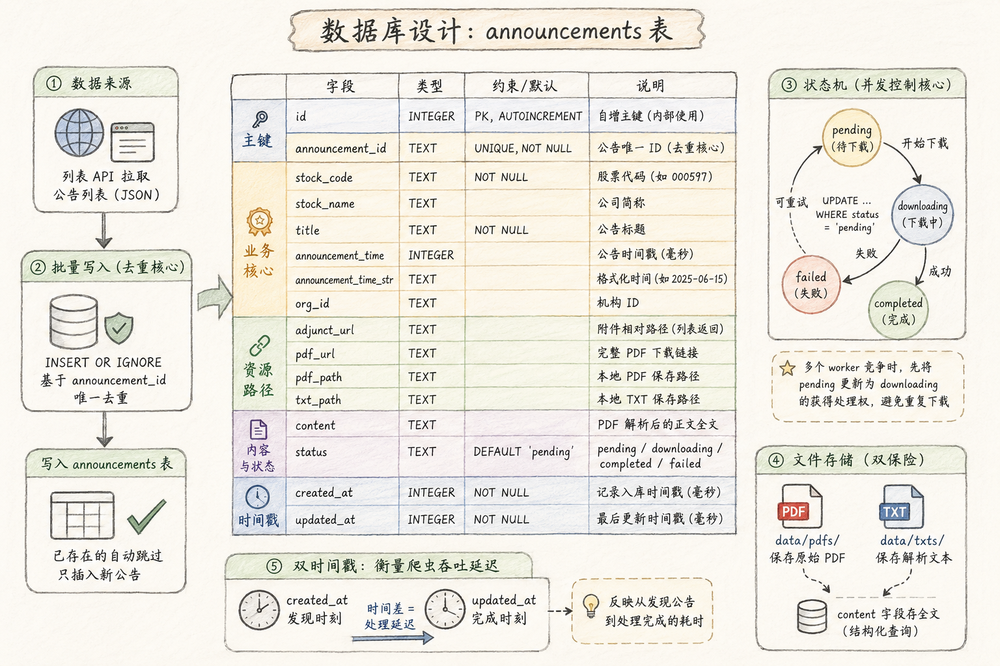
数据库设计决定了爬虫能做什么、不能做什么。这不是”先随便建个表后面再改”的事情——表结构的修改意味着数据迁移，而数据迁移是工程中的高事故率操作。
announcements 表的完整定义：
| 字段 | 类型 | 约束 | 说明 |
|---|---|---|---|
id |
INTEGER | PRIMARY KEY AUTOINCREMENT | 自增主键（内部使用，不做业务逻辑） |
announcement_id |
TEXT | UNIQUE NOT NULL | 公告唯一 ID（去重的核心依据） |
stock_code |
TEXT | NOT NULL | 股票代码（如 “000597”） |
stock_name |
TEXT | 公司简称（如 “东北制药”） | |
org_id |
TEXT | 机构 ID（巨潮网内部编码） | |
title |
TEXT | NOT NULL | 公告标题（如 “2025 年年度权益分派实施公告”） |
announcement_time |
INTEGER | 公告时间戳（毫秒） | |
announcement_time_str |
TEXT | 格式化时间字符串（如 “2025-06-15”） | |
adjunct_url |
TEXT | 附件相对路径（从列表 API 返回中提取） | |
pdf_url |
TEXT | 完整 PDF 下载链接（拼接后） | |
pdf_path |
TEXT | 本地 PDF 文件保存路径 | |
txt_path |
TEXT | 本地 TXT 文件保存路径 | |
content |
TEXT | PDF 解析后的正文全文 | |
status |
TEXT | DEFAULT ‘pending’ | pending / downloading / completed / failed |
created_at |
INTEGER | NOT NULL | 记录入库时间戳（毫秒） |
updated_at |
INTEGER | NOT NULL | 记录最后更新时间戳（毫秒） |
几个值得深入理解的设计细节：
announcement_id是去重的绝对核心。 列表更新线程每次拉取后，用INSERT OR IGNORE INTO announcements (...) VALUES (...)批量写入——已存在的announcement_id自动跳过，无需在应用层做IF NOT EXISTS判断。这是一个经典的”让数据库做它擅长的事”的案例。status字段实现了一个简单但完整的状态机。 从pending（新入库，待下载）到downloading（下载中，防止被其他 worker 重复抓取）到completed（下载+解析全部成功）或failed（任一环节失败，记录错误原因）。状态机的价值在并发场景下尤其明显——多个 worker 同时对pending记录发起下载时，先更新为downloading的 worker 获得处理权（配合UPDATE ... WHERE status = 'pending'的条件更新）。- PDF 和 TXT 同时保存。 PDF 文件保存在
data/pdfs/，解析后的文本写入数据库content字段（同时保存一份 TXT 文件在data/txts/）。这种”双保险”设计意味着：即使数据库损坏或content字段解析出错，原始 PDF 和 TXT 文件仍在磁盘上。对于需要运行数天的长时间爬取任务，这种冗余是值得的。 - 双时间戳。
created_at记录公告是什么时候被爬虫发现的（反映数据的”发现时效”），updated_at记录最后一次状态变更的时间（反映处理的”完成时效”）。两个时间的差值可以告诉你爬虫的吞吐延迟。
完整案例材料：
B班-Agent课程/Juchao/——包含完整爬虫项目（juchao_crawler/）、9 个集成测试（tests/）、使用文档（README.md）。
9. 测试：不只是”跑通了就行”
巨潮网爬虫包含了 9 个集成测试，全部通过只需要 1.35 秒。不要因为时间短就低估测试的价值——这 1.35 秒是三个月后你能安全修改代码的保证。
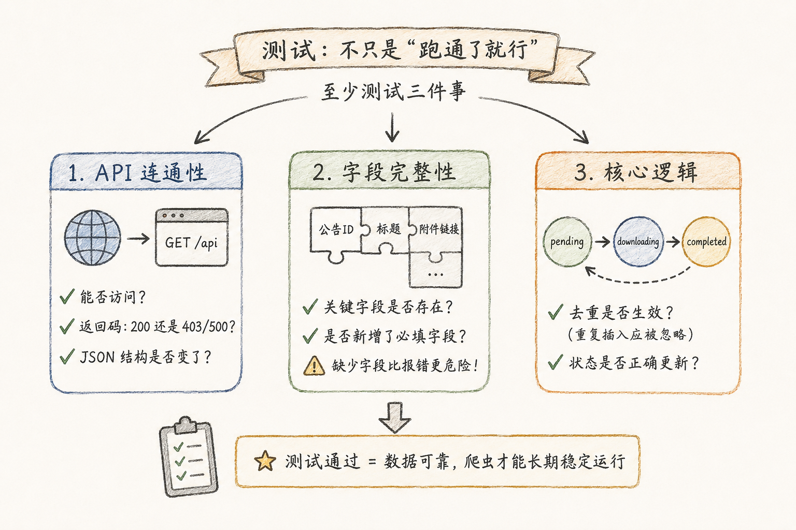
| 测试函数 | 测试内容 | 保护什么 |
|---|---|---|
test_list_api_smoke |
列表 API 是否返回 200 且包含数据 | 最基础的连通性——API 改版或挂了能第一时间知道 |
test_pagination |
翻页是否正常工作（page 1 和 page 2 数据不同） | 防止只爬了第一页的数据——这是新手最容易犯的 bug |
test_normalize_announcement |
字段提取和标准化是否正确 | 字段名变更、字段缺失——API 悄悄改返回结构时报警 |
test_build_pdf_url |
PDF URL 拼接是否正确 | 静态域名或路径规则变更\ |
test_database_insert_and_query |
INSERT、去重、SELECT 是否正常 | 数据库操作正确性 |
test_pdf_download_and_parse_smoke |
下载一份真实 PDF 并解析 | PDF 服务器是否在线、PDF 格式是否变化 |
test_list_updater |
列表更新线程的完整流程 | 定时拉取逻辑 |
test_scheduler_run_once |
调度器单次运行 | 双线程协调逻辑——列表更新和 PDF 下载是否各司其职 |
test_pdf_path_sanitization |
文件名非法字符清理 | 防止公告标题中的/、: 等字符导致文件创建失败 |
至少要测试的三件事：
- API 连通性——接口是否还能正常访问？返回码是 200 还是 403/500？返回的 JSON 结构是否变了？
- 字段完整性——关键字段（如 announcement_id、adjunct_url、title）是否还存在？是否新增了必填字段？缺少字段比报错更危险——它会静默地产生缺失值。
- 核心逻辑——去重是否生效（重复插入应被忽略）？状态是否正确更新（pending → downloading → completed）？
经验之谈： 最容易出问题的不是代码逻辑，而是上游变化。API 悄悄改了参数名（pageNum 变成了 page）、返回结构变了（announcement_id 从顶层移到了嵌套对象里）、PDF 服务器换了域名——这些事情在爬虫长期运行中一定会发生。测试就是你的地震预警系统。
10. 从「许愿式编程」到 TODO.md 驱动
这是本讲最重要的方法论。
许愿式编程是给 Agent 一个模糊的需求，然后期待它自动搞定一切。
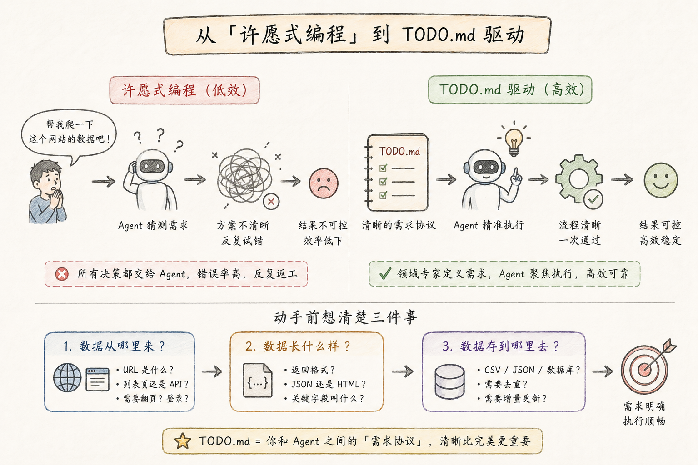
❌ 许愿式：「帮我爬取巨潮网的所有公告」
——Agent 会做什么？它会猜。
——用什么技术？可能猜 requests，遇到 SPA 后报错再换 Playwright
——数据存哪里？可能猜 CSV（后续发现需要增量更新时傻眼）
——翻页怎么处理？可能猜 while True 无限循环（爬到天荒地老）
——反爬怎么处理？可能猜什么也不做（爬到一半被封）
——PDF 怎么处理？可能猜全部下载后用 marker 批量转换（磁盘爆满）✅ 结构化：「帮我分析巨潮网的公告列表 API，设计一个多线程爬虫，
分两个阶段：列表获取和 PDF 下载。具体要求见 TODO.md」
——Agent 会做什么？它先读 TODO.md。
——TODO.md 里写了：目标 URL、数据格式要求、存储方式（SQLite）、
多线程架构、反爬策略、测试要求。
——Agent 不需要猜任何东西。它在明确的边界内发挥技术能力。两者的区别是根本性的。许愿式需求把所有的架构决策压力都交给了 Agent——用什么技术路线、怎么处理翻页、数据存哪里、反爬怎么处理。Agent 会猜，但猜错的概率很高。你在 AI 面前是领域专家——你知道数据会被用来做什么研究、需要什么字段、能容忍多大的延迟。Agent 不知道这些。你有责任把你的领域知识翻译成 Agent 能理解的工程需求。
TODO.md 本质上是你和 Agent 之间的「需求协议」。你不需要会写代码——但你需要在动手之前想清楚三件事：
- 数据从哪里来？ URL 是什么？是列表页还是 API？需要翻页吗？需要登录吗？
- 数据长什么样？ 返回格式是 JSON 还是 HTML？关键字段叫什么名字？
- 数据存到哪里去？ 存成 CSV、JSON 还是数据库？需要去重吗？需要增量更新吗？
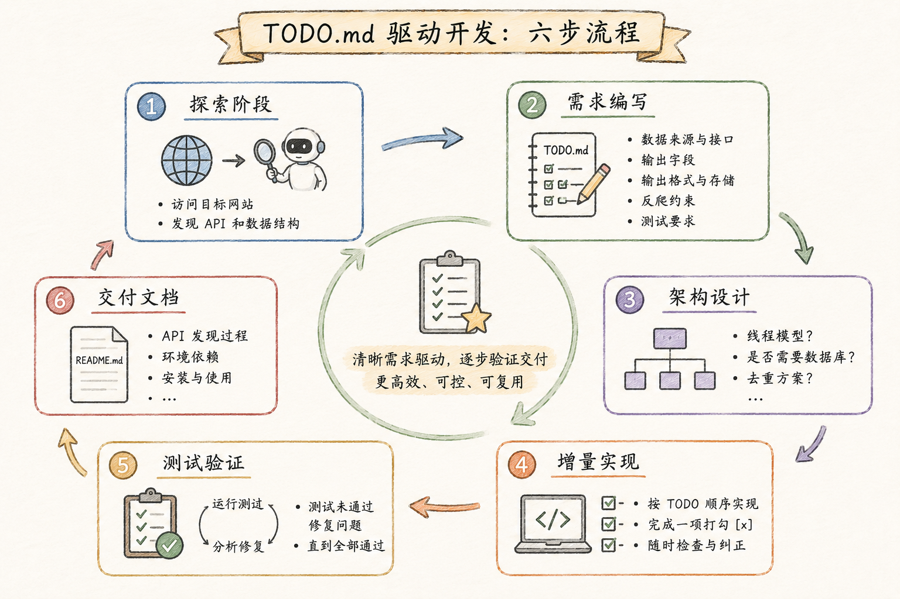
TODO.md 驱动开发的六步流程：
步骤 1：探索阶段。 你给出目标 URL，让 Agent 用 Playwright 探索网站结构。Agent 汇报发现了哪些 API、数据格式是什么、有没有反爬措施。这个阶段你不需要写任何需求——你是在收集信息。
步骤 2：需求编写。 基于 Agent 的探索报告，你编写 TODO.md。内容包括：目标 URL 和数据接口说明（Agent 已经发现的 API）、期望的输出字段列表（哪些字段是必须的、哪些是可选的）、输出格式和存储方式（CSV / JSON / SQLite）、反爬约束（请求间隔、代理配置）、测试要求（至少测试什么）。
步骤 3：架构设计。 Agent 阅读 TODO.md，提出爬虫架构方案。是单线程还是多线程？要不要数据库？怎么去重？你审阅方案——如果有不同意见（比如你发现 API 有频率限制，不能用多线程），在 TODO.md 中补充。
步骤 4：增量实现。 Agent 按 TODO.md 的顺序逐项实现，每完成一项就打勾 [x]。你可以在任何一项完成后检查 Agent 的工作——如果方向偏了，及时纠正，而不是等全部写完才发现。
步骤 5：测试验证。 Agent 编写集成测试并运行。如果测试未通过，Agent 分析失败原因并修复。重复直到所有测试通过。
步骤 6：交付文档。 Agent 生成 README.md，记录 API 发现过程、环境依赖、安装步骤、使用方式。这份文档是你三个月后回来复用的唯一凭据。
巨潮网案例的 TODO.md 示例（实际使用的需求）：
- 探索网站的网络结构，处理翻页等细节
- 探索每条公告详情页中提取 PDF 链接的方法
- 定时更新列表页，检查新公告
- PDF 解析为 txt 文件
- 设计 SQLite 数据库，包含上市公司代码、名称、公告标题、公告内容等
- 将转换好的 PDF 信息写入数据库
- 使用多线程：更新列表和获取 PDF 使用不同线程
- 保留反爬代理接口
8 条需求，每条都是具体的、可验证的。Agent 不需要猜——它知道要探索什么、要设计什么、要测试什么。结果：9 个集成测试一次性通过，端到端验证 30 条公告全部成功入库。
11. 爬虫工程实践三原则
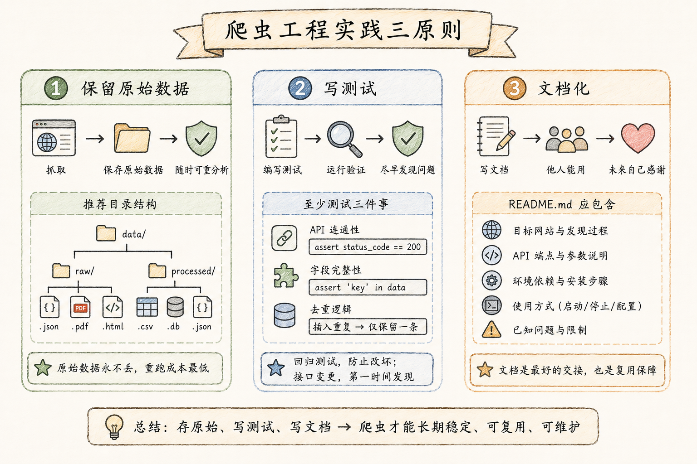
这三个原则来自实际踩过的坑。
原则一：保留原始数据。 永远保存一份未经处理的原始响应——JSON 文件、PDF 原文、HTML 页面。爬虫代码可能写错，解析逻辑可能有 bug，字段映射可能遗漏，但原始数据不会变。有了它，你可以随时重新解析而不需要重新爬取——而重新爬取的成本可能很高（几小时到几天的时间成本，加上可能被目标网站封禁的风险）。
具体做法：爬虫的输出目录结构应该是两层的——
project/
├── raw_data/ ← 原始响应，只写入不修改
│ ├── page_1.json
│ ├── page_2.json
│ └── pdfs/
│ └── 000597_1225370066.pdf
└── data/ ← 解析后的结构化数据
└── announcements.csv原则二：写测试。 测试不是为了”证明代码是对的”——没有人能证明代码是对的。测试是为了在三个关键时刻保护你：① 首次开发完成时——验证核心流程跑的通；② 修改代码后——确保修改没有破坏已有功能（回归测试）；③ 上游接口变更时——第一时间发现数据源的变化。
至少测试三件事：API 连通性（assert response.status_code == 200）、字段完整性（assert 'announcement_id' in data）、去重逻辑（插入两条相同记录，数据库只有一条）。
原则三：文档化。 至少写一个 README.md。内容至少包含：
- 目标网站和发现过程： 你是怎么找到这个数据源的？用了什么 API？有什么反爬？
- API 端点和参数说明： 请求方法、URL、参数列表、返回格式
- 环境依赖和安装步骤：
pip install -r requirements.txt或 conda 环境 - 使用方式： 如何启动？如何停止？如何更换目标股票代码？
- 已知问题： 哪些场景还没处理？哪些边界条件可能出问题？
三个月后你回来复用时，会感谢现在花 15 分钟写的文档。更重要的是——如果这个爬虫需要交给师弟师妹维护，文档是唯一能让他们不来找你的东西。
12. 数据采集工具链全景
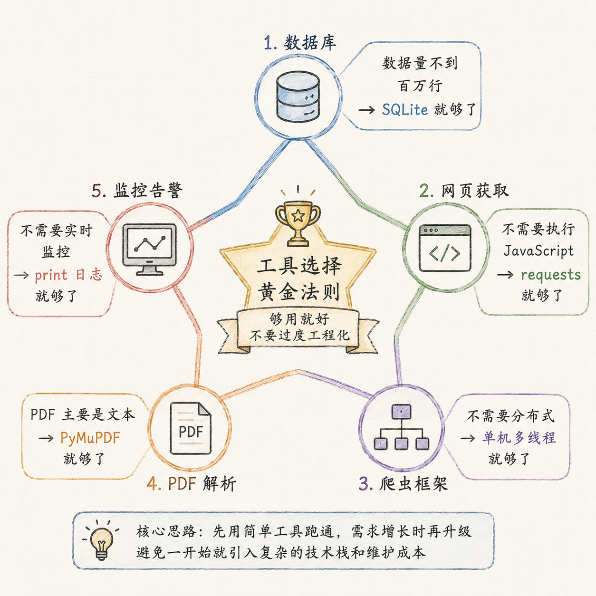
| 环节 | 工具 | 典型用法 | 选型要点 |
|---|---|---|---|
| 请求发送 | requests, httpx |
resp = requests.get(url, headers=h, proxies=p) |
httpx 支持异步和 HTTP/2，requests 更简单 |
| 浏览器模拟 | Playwright, Selenium | page.goto(url); data = page.locator('.item').all_inner_texts() |
Playwright 更现代、更快；Selenium 生态更成熟 |
| HTML 解析 | BeautifulSoup, lxml | soup.select('div.announcement > a') |
BeautifulSoup 容错性好；lxml 速度更快 |
| 正则抽取 | Pythonre |
re.findall(r'\d{4}-\d{2}-\d{2}', text) |
用于简单的模式匹配——日期、数字、URL |
| JSON 处理 | Pythonjson |
data = response.json() |
几乎不需要第三方库 |
| PDF 解析 | PyMuPDF (fitz), pdfplumber |
doc = fitz.open(path); text = doc[0].get_text() |
PyMuPDF 快且轻量；pdfplumber 表格提取更强 |
| 数据库 | SQLite, PostgreSQL | cursor.execute('INSERT OR IGNORE INTO ...') |
SQLite 零配置、单文件；PostgreSQL 支持并发写入 |
| 代理管理 | httpx.Client(proxy=...) |
client = httpx.Client(proxy='http://127.0.0.1:7890') |
大多数场景不需要代理池 |
| 任务调度 | threading, schedule |
threading.Thread(target=update_list) |
线程用于并发；schedule 用于定时触发 |
| 数据框 | pandas | df = pd.read_json(api_response) |
用于数据清洗和分析，不是存储 |
| 测试 | pytest |
pytest tests/ -v |
简单的 assert 语句即可 |
工具选择的黄金法则：够用就好，不要过度工程化。
- 数据量不到百万行 → SQLite 就够了，不需要 MySQL / PostgreSQL
- 不需要执行 JavaScript → requests 就够了，不需要 Playwright
- 不需要分布式 → 单机多线程就够了，不需要 Scrapy / Celery
- PDF 主要是文本 → PyMuPDF 就够了，不需要 marker / MinerU
- 不需要实时监控 → print 日志就够了，不需要 Prometheus + Grafana
13. 数据采集在实证研究中的位置
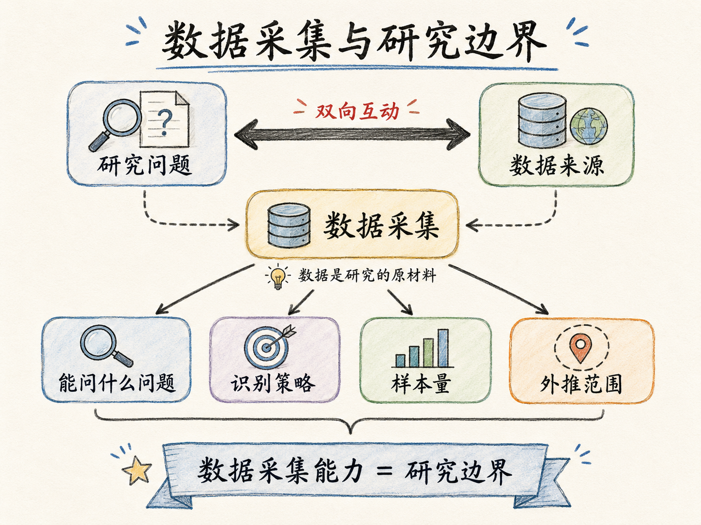
让我们把数据采集放回实证研究的完整流程中来看：
研究问题 → 数据采集 ← 这一讲的内容
↓
数据清洗 → 描述统计 → 基准回归 → 稳健性检验 → 机制分析 → 写作数据采集是实证研究的起点——它决定了你能问什么问题、能用什么识别策略、样本量有多大、结论的外推范围有多广。数据不是在你开始做研究的那一刻就整齐地放在硬盘里的——它是你需要自己去获取的原材料。研究问题和数据来源之间是一个双向互动的关系：你看到了什么数据，就会想到什么问题；你想到了什么问题，就会去找什么数据。因此，数据采集能力直接决定了你的研究边界有多宽。
对于经管研究者来说，三类数据源尤其值得关注：
第一类：公开行政数据。 巨潮网公告、国家统计局数据、各地统计局年鉴、海关进出口数据、土地出让成交公告——这些是官方披露的结构化或半结构化数据，通常有相对稳定的网页结构或 API 接口。它们的优势是权威性和连续性（可以构建长时间面板），挑战是分散在不同的网站和格式中（PDF、Excel、HTML 表格）。
第二类：网页文本数据。 上市公司年报和管理层讨论（MD&A）、政策文件和政府工作报告、新闻报道和社交媒体内容——这些是非结构化文本，数据量大，但信息密度高。需要爬取 + 解析两步走。文本数据在经管研究中的应用正在快速增长——从管理层语调分析到政策不确定性度量。
第三类：第三方平台 API。 Google Trends（搜索热度）、百度指数（搜索趋势）、高德/百度地图 API（地理信息、POI 密度）、空气质量 API（每日 AQI）、夜间灯光数据——这些平台通常提供公开 API 或批量下载，但可能有调用频率限制或需要注册申请。它们是传统统计数据的补充——比如用夜间灯光亮度作为地区经济活动的代理变量，用 POI 密度度量商业活跃度。
一个忠告： 不要等到研究设计做完再去想数据从哪里来。数据和问题是一起演化的。你发现了一个数据源——它的粒度（企业级还是城市级）、频率（日度还是年度）、覆盖范围（全国还是局部）、时间跨度（3 年还是 30 年）——这些特征反过来会塑造你的研究问题。反过来说，如果你先有了一个具体的研究问题再去”找数据”，往往会发现要么数据不存在，要么粒度不够——这时候你只能降低研究问题的精度。
实战任务
任务： 选择一个可公开访问的数据源，让 Agent 帮你完成一次完整的数据采集流程。
三个递进难度：
| 难度 | 任务描述 | 参考案例 | 预计时间 |
|---|---|---|---|
| 入门 | 爬取submarinecablemap.com 的海底光缆数据 |
task8/SubmarineCable/ |
30 分钟 |
| 进阶 | 爬取巨潮网某只股票过去一年的公告 | task9/Juchao/ |
1-2 小时 |
| 挑战 | 自行选择一个与你的研究方向相关的网站，完成探索 → 编码 → 存储全流程 | —— | 2-4 小时 |
入门级（海底光缆）适合： 没有爬虫经验的初学者。API 是公开的 GET 请求，不需要处理分页、不需要处理反爬（除了简单延时）、不需要设计数据库。核心体验是”API 发现”——看 Agent 如何找到 SPA 背后的数据接口。
进阶级（巨潮网）适合： 有基础爬虫概念的同学。涉及 POST API、多线程架构、SQLite 持久化、PDF 下载和解析、反爬策略设计。核心体验是”生产级设计”——一个能持续运行、增量更新的爬虫长什么样。
挑战级（自行选择）适合： 希望把爬虫能力应用到自己的研究方向的同学。你需要自己完成探索 → 需求编写 → 架构设计 → 编码测试的完整闭环。Agent 会帮你但决策是你来做。
标准操作流程（8 步）：
- 创建项目文件夹（如
MyCrawler/），初始化 git 仓库 - 让 Agent 用 Playwright 探索目标网站，汇报发现的 API 和数据格式
- 基于探索报告，编写
TODO.md（至少包含：目标 URL、期望字段、输出格式、存储方式、反爬约束） - Agent 设计爬虫架构方案，你审阅并确认
- Agent 按 TODO.md 逐项实现爬虫代码
- 运行爬虫，观察日志输出，发现问题，与 Agent 一起调试
- 将原始数据保存到
raw_data/，解析后数据保存到data/ - Agent 编写集成测试并运行，写
README.md
验收标准（你的爬虫应该满足）：
- 能成功获取至少 50 条以上的目标数据
- 代码有基本的错误处理（网络超时重试、解析失败不中断）
- 输出数据格式统一、字段完整
- 有 README.md 记录发现过程和使用说明
- 原始数据已保存（可随时重新解析）
注意事项：
- 确认目标网站的服务条款允许学术研究用途的数据采集
- 遵守
robots.txt中声明的爬虫规则 - 合理控制请求频率——宁慢毋快
- 如果爬虫需要长时间运行（超过 1 小时），考虑在服务器或云主机上运行，而非本地笔记本
案例材料索引
所有案例均提供完整的项目文件——包括爬虫代码、测试文件、使用文档和原始数据。建议在动手实战前先打开这些文件夹浏览一遍，理解一个完整爬虫项目的文件结构和代码组织方式。
| 案例 | 位置 | 复杂度 | 关键技能 |
|---|---|---|---|
| 海底光缆爬虫 | task8/SubmarineCable/ |
入门 | API 发现、GET 请求、JSON 解析、CSV 数据展开 |
| 巨潮网公告爬虫 | task9/Juchao/ |
进阶 | POST API、多线程调度、SQLite 持久化、PDF 下载与文本解析、集成测试 |
每个案例文件夹包含：
- 爬虫主程序（
.py文件） - 测试文件（
tests/目录） - 使用文档（
README.md） - 原始数据和解后数据（
raw_data/和data/） - 需求描述（
TODO.md，部分案例）
本讲核心概念回顾
| 概念 | 一句话解释 |
|---|---|
| 爬虫 | 用代码自动化”访问网页 → 复制信息 → 保存数据”的过程 |
| 技术路线 | 直接 HTTP 请求（requests）优先于浏览器模拟（Playwright） |
| SPA | 单页应用——页面由 JavaScript 在浏览器中动态渲染，源代码里看不到数据 |
| API 发现 | 用浏览器开发者工具的 Network 标签页找到 SPA 页面背后的数据接口 |
| 反爬策略 | 服务器从 IP 频率、请求头、JS 执行、验证码等维度识别并阻止爬虫 |
| 反爬博弈 | 先温和（正常延时 + 真实请求头）→ 遇到阻拦再加防御——不要一上来就全副武装 |
| TODO.md 驱动 | 把需求写清楚再交给 Agent——你负责领域的架构决策，Agent 负责技术的编码执行 |
| 双线程架构 | 列表拉取（快）和文件下载（慢）分离到不同线程——各司其职，互不阻塞 |
| 状态机 | 用 pending → downloading → completed / failed 追踪每条记录的处理生命周期 |
| 去重机制 | 用唯一 ID（announcement_id 或 URL 哈希）的数据库唯一约束保证同一数据不会重复入库 |
| 保留原始数据 | 永远保存原始响应（JSON / PDF / HTML）——代码可能写错，原始数据不会 |
| 集成测试 | 验证 API 连通性、字段完整性、核心逻辑正确性——1.35 秒跑完，保护你三个月后的修改 |
| 轻量优先 | 工具选择够用就好——PyMuPDF 而非 marker、SQLite 而非 MySQL、线程而非分布式 |
课后阅读与准备
必读：
- 浏览
task8/SubmarineCable/和task9/Juchao/两个完整案例的项目文件 - 阅读 课程大纲的完整内容
准备（下次课前完成）：
- 确定你实战任务要爬取的数据源（入门级、进阶级或挑战级任选其一）
- 在下次课前完成 TODO.md 的初稿（至少包含目标 URL 和期望字段列表）
- 如果已经尝试了爬取，记录遇到的问题（错误信息、反爬拦截、数据格式意外等）——下次课讨论
思考题：
- 你研究领域中，有哪些可公开访问的数据源目前以”手工下载”的方式获取？其中哪些可能通过 API 发现简化数据采集？
- 如果你的数据源是 PDF 格式（如年报、公告、政策文件），你会如何设计 PDF → 结构化数据的完整管线？从下载到解析到入库，每一步的”够用就好”标准是什么？
- 爬虫和数据清洗的边界在哪里？哪些处理应该在爬虫阶段完成（如去重、格式标准化），哪些应该留到数据分析阶段？